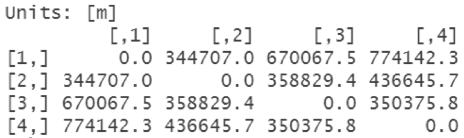
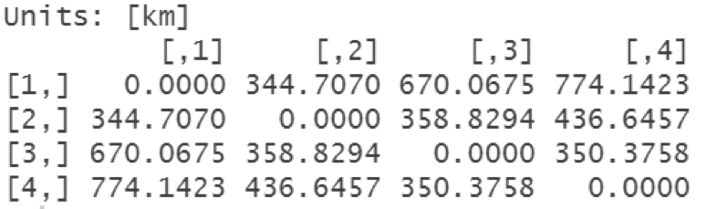
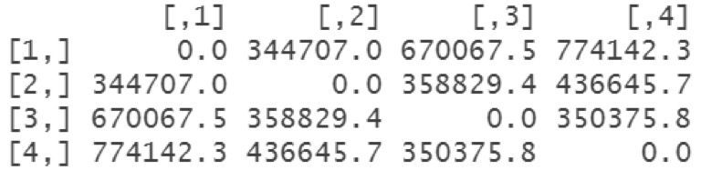
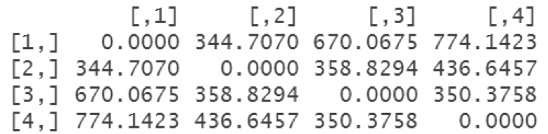

收录于合集
#实用技术 19 个
#历史政治学 58 个
研究国家建构的读者对如何测量国家能力、寻找合适的代理变量一定是不陌生的。我们之前在推送的（《如何测量国家能力？》）一文中也有过较为详细的介绍。但是如果从历史社会学和所谓的历史政治学角度去研究古代中国或者其他国家的国家发展，在面对数据有限的结构性限制时，给出有说服力的测量国家能力的方法则是一个颇为棘手的问题。尽管棘手，但是不代表不可能实现。如果读者朋友对春秋战国时期国家形成的历史社会学研究感兴趣，那么对用“进军距离”测量国家能力的巧妙做法一定有所耳闻。采用“进军距离”作为代理变量的做法源自于赵鼎新教授在中英文著作《东周战争与儒法国家的诞生》（第72-74页）以及 The Confucian-Legalist State: A New Theory of Chinese History （第123-125页）中对争霸国国家能力的测量，这一做法的巧妙之处在于善于发掘出隐藏在文言文中的非结构化数据并将其结构化，而且密切契合了与全书的研究议题，成为运用代理变量测量的经典案例，对我们研究历史上国家能力的学生来说具有重要的启发和借鉴意义。
现在各大地图的电脑端以及手机端功能十分强大，只要我们知道历史上的进军路线，我们便可以通过输入起止点的方式很便捷的测算出来。那么如何用R软件进行计算呢？下面我们将结合历史上的一个案例和相关的R包进行介绍。
我们选取的历史案例是三国时期汉丞相诸葛武侯发起的南征之战。武侯在闻名遐迩的《出师表》中写道“今南方已定”即是对南征之战胜利的描述，而小说《三国演义》中家喻户晓的“七擒孟获”故事同样也是发生在这一战争期间。它的大致经过是这样的：章武三年（公元223年），在夷陵之战中遭遇大败的先主刘备在永安宫崩殂，遗诏太子刘禅即位、丞相亮辅政。消息传到西南边境，当地豪强雍闓、牂牁太守朱褒以及越雋首领高定即举兵反叛蜀汉，正所谓“高定恣睢于越雋，雍闓跋扈于建宁，朱褒反叛于牂牁”（《三国志·蜀书·黄李吕马王张传》）。建兴三年（公元225年），丞相武侯决定发兵征讨。武侯除令李恢、马忠部分行外，自率大军从成都出发，先到越雋（治在今四川西昌东南）擒杀高定，后与马忠部会和，五月渡泸，再与李恢部合兵益州（治在今云南晋宁东），最终平定益州、永昌（治在云南保山东北）等地，西南平定，武侯遂班师回朝，南征之战取得最终胜利，巩固了蜀汉的后方。
在对历史案例回顾完之后，接下来我们引出本文介绍的计算方法，我们提供在R中实现的两种方法，其中一个是之前在推文中一直介绍使用的sf包，另外一个则是geosphere包。无论是使用sf包还是geosphere包，都依赖经纬度，所以我结合《中国历代战争年表》的对武侯主力行军路线的记载对关键地点的经纬度（以历史地名对应当今行政区划的所在地）做了记录。在此基础上利用sf包计算进军距离的命令如下：
library(tidyverse)library(sf)location <- read.csv('location.csv')distance <- select(location, Long, Latitude)distanceNew <- st_as_sf(x = distance, coords = c("Long", "Latitude"), crs = "+proj=longlat +datum = WGS84")st_distance(distanceNew)
这里R是以矩阵的形式呈现出每个节点之间的距离，单位是m，如图1所示：

图1
如果要以km为单位进行计算，则需要输入：
st_distance(distanceNew) %>% units::set_units(km)
结果如图2所示：

图2
除了sf包外，geosphere包也可以快速实现进军距离的计算，具体步骤如下： ****
install.packages(“geosphere”) #如没安装该包首先需要先行安装，如已安装可以略过 library(geosphere)distm(distance)
这样R仍然会以矩阵的形式显示每个节点之间的距离，如图3所示：

图3
这里每个节点之间的距离依然是以m为单位，如果要按照km计算的话在最后一条命令除以1000即可，即：
distm(distance)/1000
结果如下图所示：

图4
比较一下sf和geosphere两个包的计算结果，我们可以发现两者是一致的，至于选择全凭读者偏好。需要指出的是，本文提供的距离是两点间的直线距离，虽然统一使用直线距离不会对最终结果产生严重的偏差，但我们需要知道它是被简化过的，而历史上真实发生的距离往往比这一直线距离要更长，读者们在使用时可以根据详细历史的记载做出更精确的计算。
最后按照惯例，我们将本文使用的数据和代码打包上传，感兴趣的读者朋友可以点击文末“阅读原文”（提取码：jjjl）下载复验。
参考文献：
[1] [晋]陈寿著、[宋]裴松之注.三国志[M].北京：中华书局，1982.
[2] 赵鼎新著.东周战争与儒法国家的诞生[M].夏江旗译，北京：北京联合出版公司，2020.
[3] 《中国军事史》编写组编.中国历代战争年表[M].北京：解放军出版社，2003.
[4] Zhao, Dingxin. The Confucian-Legalist State: A New Theory of Chinese History. New York: Oxford University Press, 2015.
撰文：杨端程 审读：吴温泉 编辑：蒋晟